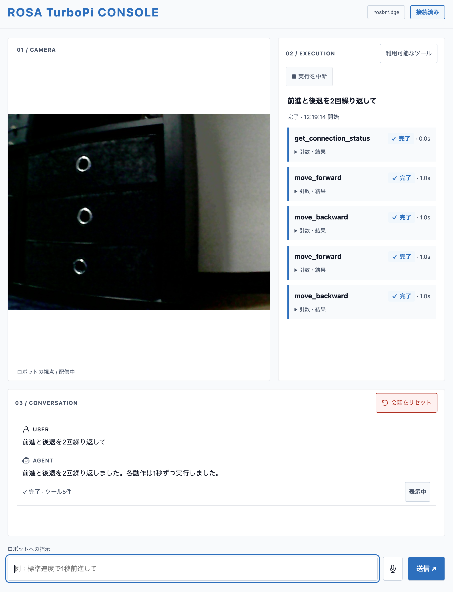
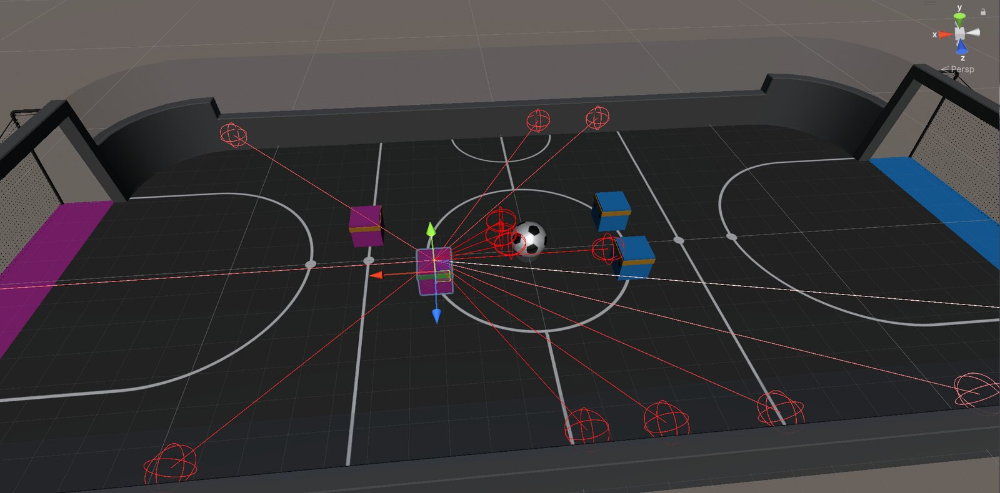
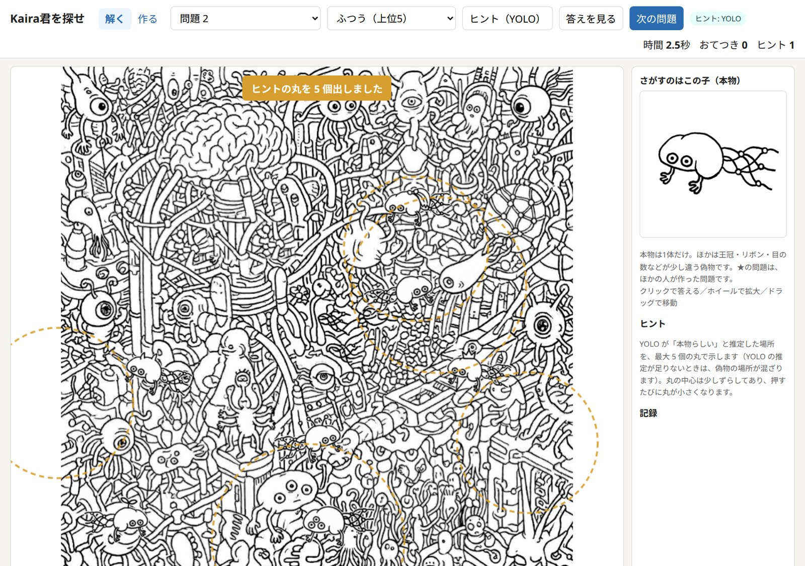
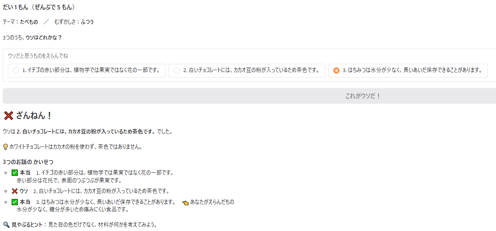

自然言語でロボットカーを操作
NASA JPLのROSAを使い、「前進と後退を2回繰り返して」のような日本語の指示から、LLMが移動や画像認識のツールを選んでロボットカーTurboPiを動かします。 子どもでも体験しやすいよう、音声での指示にも対応しています。
京都大学11月祭
About KaiRA
京都大学人工知能研究会 KaiRAは、AIについて学んでいるサークルです。
毎週木曜日に勉強会を行っており、今年度前期は「ゼロから作るDeep Learning」と「深層学習による画像認識の基礎」を輪読しました。 11月祭の後からは「ゼロから作るDeep Learning ❻ ―LLM編」の輪読を始めます。 読みたい本・論文があれば、人を集めてみんなで読むことも可能です!
週に一度実装会も行っており、各回でテーマを決めて、輪読会の内容を実装したりしています。
月に一度論文読み会も行っており、各回でテーマを決めて、最新のAI論文を発表したりしています。
活動の中心は毎週木曜日の勉強会と実装会ですが、制作物を作ったり、チームを組んでkaggleなどの機械学習コンペティションに参加したりもしています。
スポンサーとして株式会社Ristさんと株式会社スクラムサインさんが付いてくださっており、サークルメンバーに対して本の購入補助や計算機代の補助もしています。
11月祭の展示で興味を持った方がいればぜひ一緒に勉強しましょう！
Journal
11月祭に向けてサークルメンバーで会誌「KaiRA Journal vol.10」を作成しました。少しでもAIの技術について興味を持っていただけたら幸いです。
今年の会誌では、ニューラルネットワークの入門に加えて、11月祭で展示しているAIデモについて、使われている技術や開発の工夫を紹介しています。
目次
Demos
11月祭会場ではAIを使ったデモを展示しています。一部のデモはソースコードをGitHubで公開しています。 ぜひ会場で遊んでいってください！！

NASA JPLのROSAを使い、「前進と後退を2回繰り返して」のような日本語の指示から、LLMが移動や画像認識のツールを選んでロボットカーTurboPiを動かします。 子どもでも体験しやすいよう、音声での指示にも対応しています。


Geminiで生成した背景に、本物1体と偽物のKaiRA君を合成した探し絵です。 KaiRA君を学習させた物体検出モデルYOLOがヒントを出してくれるほか、自分で問題を作ってAIを出し抜けるか挑戦することもできます。

「AIはもっともらしくウソをつくことがある」という性質を遊びにした3つのゲームです。 AIが作った文からウソを見破る「AIのウソをみやぶれ！」、AI名探偵があなたのお話の真偽を推理する「AIをだませるかな？」、容疑者を演じるAIから嘘つきを突き止める「AI嘘発見ゲーム」を遊べます。
あなたが作ったあるなしクイズの共通点をAIに当ててもらう「AIに解いてもらう」と、AIが作ったあるなしクイズに挑戦する「AIに作ってもらう」の2つのゲームで、AIの柔軟な思考力を試します。